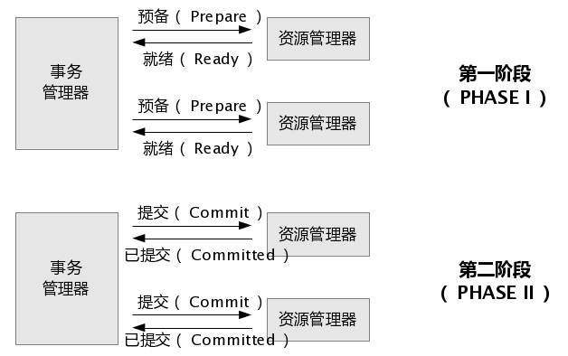
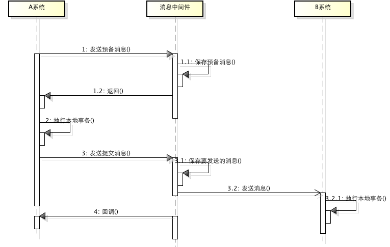
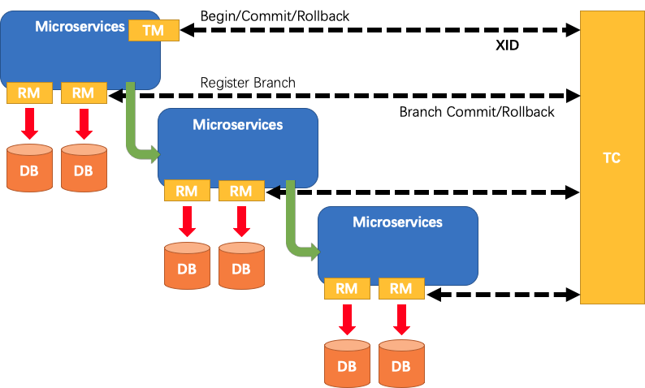

分布式事务¶
1. 本地事务¶
商品新增功能非常复杂，商品管理微服务在service层中调用保存spu和sku相关的方法，为了保证数据的一致性，必然会使用事务。
在JavaEE企业级开发的应用领域，为了保证数据的完整性和一致性，必须引入数据库事务的概念，所以事务管理是企业级应用程序开发中必不可少的技术。
咱们之前玩的事务都是本地事务。所谓本地事务，是指该事务仅在当前工程内有效。
1.1. 基本概念¶
事务的概念：事务是逻辑上一组操作，组成这组操作各个逻辑单元，要么一起成功，要么一起失败。
事务的四个特性（ACID）：
-
原子性(atomicity)：“原子”的本意是“不可再分”，事务的原子性表现为一个事务中涉及到的多个操作在逻辑上缺一不可。事务的原子性要求事务中的所有操作要么都执行，要么都不执行。
-
一致性(consistency)：“一致”指的是数据的一致，具体是指：所有数据都处于满足业务规则的一致性状态。一致性原则要求：一个事务中不管涉及到多少个操作，都必须保证**事务执行之前**数据是正确的，**事务执行之后**数据仍然是正确的。如果一个事务在执行的过程中，其中某一个或某几个操作失败了，则必须将其他所有操作撤销，将数据恢复到事务执行之前的状态，这就是回滚。
-
隔离性(isolation)：在应用程序实际运行过程中，事务往往是并发执行的，所以很有可能有许多事务同时处理相同的数据，因此每个事务都应该与其他事务隔离开来，防止数据损坏。隔离性原则要求多个事务在**并发执行过程中不会互相干扰**。
-
持久性(durability)：持久性原则要求事务执行完成后，对数据的修改永久的保存下来，不会因各种系统错误或其他意外情况而受到影响。通常情况下，事务对数据的修改应该被写入到**持久化存储器**中。
1.2. 隔离级别¶
事务并发引起一些读的问题：
-
脏读 一个事务可以读取另一个事务未提交的数据
-
不可重复读 一个事务可以读取另一个事务已提交的数据 单条记录前后不匹配
-
虚读（幻读） 一个事务可以读取另一个事务已提交的数据 读取的数据前后多了点或者少了点
并发写：使用mysql默认的锁机制（独占锁）
解决读问题：设置事务隔离级别
-
read uncommitted(0)
-
read committed(2)
-
repeatable read(4)
-
Serializable(8)
隔离级别越高，性能越低。

一般情况下：脏读是不可允许的，不可重复读和幻读是可以被适当允许的。
1.3. 相关命令¶
查看全局事务隔离级别：SELECT @@global.tx_isolation
设置全局事务隔离级别：set global transaction isolation level read committed;
查看当前会话事务隔离级别：SELECT @@tx_isolation
设置当前会话事务隔离级别：set session transaction isolation level read committed;
查看mysql默认自动提交状态：select @@autocommit
设置mysql默认自动提交状态：set autocommit = 0;【不自动提交】
开启一个事务：start transaction; / begin;
提交/回滚：commit / rollback
在事务中创建一个保存点：savepoint tx1
回滚到保存点：rollback to tx1
1.4. 传播行为¶
事务的传播行为不是jdbc规范中的定义。传播行为主要针对实际开发中的问题
七种传播行为：
REQUIRED 支持当前事务，如果不存在，就新建一个
SUPPORTS 支持当前事务，如果不存在，就不使用事务
MANDATORY 支持当前事务，如果不存在，抛出异常
REQUIRES_NEW 如果有事务存在，挂起当前事务，创建一个新的事务
NOT_SUPPORTED 以非事务方式运行，如果有事务存在，挂起当前事务
NEVER 以非事务方式运行，如果有事务存在，抛出异常
NESTED 如果当前事务存在，则嵌套事务执行（嵌套式事务）
-
依赖于JDBC3.0提供的SavePoint技术
-
删除用户 删除订单。在删除订单后，设置savePoint，执行删除用户。删除订单和删除用户在同一事务中，删除用户失败，事务回滚savePoint，由用户控制视图提交还是回滚
这七种事务传播机制最常用的就两种：
REQUIRED：一个事务，要么成功，要么失败
REQUIRES_NEW：两个不同事务，彼此之间没有关系。一个事务失败了不影响另一个事务
1.4.1. 伪代码练习¶
传播行为伪代码模拟：有a,b,c,d,e等5个方法，a中调用b,c,d,e方法的传播行为在小括号中标出
a(required){
b(required);
c(requires_new);
d(required);
e(requires_new);
// a方法的业务
}
问题：
- a方法的业务出现异常，会怎样？a,b,d回滚 c,e不回滚
- d方法出现异常，会怎样？a,b,d回滚 c,e不回滚
- e方法出现异常，会怎样？a,b,d,e回滚 c不回滚，e方法出异常会上抛影响到上级方法
- b方法出现异常，会怎样？a,b回滚 c,d,e未执行
加点难度：
a(required){
b(required){
f(requires_new);
g(required)
}
c(requires_new){
h(requires_new)
i(required)
}
d(required);
e(requires_new);
// a方法的业务
}
问题：
- a方法业务出异常
- e方法出异常
- d方法出异常
- h,i方法分别出异常
- i方法出异常
- f,g方法分别出异常
1.4.2. 改造商品新增代码¶
现在商品保存的方法结构如下：
@Override
public void bigSave(SpuVo spuVo) {
/// 1.保存spu相关
// 1.1. 保存spu基本信息 spu_info
Long spuId = saveSpu(spuVo);
// 1.2. 保存spu的描述信息 spu_info_desc
saveSpuDesc(spuVo, spuId);
// 1.3. 保存spu的规格参数信息
saveBaseAttr(spuVo, spuId);
/// 2. 保存sku相关信息
saveSku(spuVo, spuId);
}
/**
* 保存sku相关信息及营销信息
* @param spuInfoVO
*/
private void saveSku(SpuVo spuVo, Long spuId) { 。。。 }
/**
* 保存spu基本属性信息
* @param spuInfoVO
*/
private void saveBaseAttr(SpuVo spuVo, Long spuId) { 。。。 }
/**
* 保存spu描述信息（图片）
* @param spuInfoVO
*/
private void saveSpuDesc(SpuVo spuVo, Long spuId) { 。。。 }
/**
* 保存spu基本信息
* @param spuInfoVO
*/
private void saveSpu(SpuVo spuVo) { 。。。 }
为了测试事务传播行为，我们在SpuInfoService接口中把saveSkuInfoWithSaleInfo、saveBaseAttrs、saveSpuDesc、saveSpuInfo声明为service接口方法。
public interface SpuInfoService extends IService<SpuInfoEntity> {
PageVo queryPage(QueryCondition params);
PageVo querySpuInfo(QueryCondition condition, Long catId);
void saveSpuInfoVO(SpuInfoVO spuInfoVO);
void saveSku(SpuVo spuVo, Long spuId);
void saveBaseAttr(SpuVo spuVo, Long spuId);
void saveSpuDesc(SpuVo spuVo, Long spuId);
Long saveSpu(SpuVo spuVo);
}
再把SpuInfoServiceImpl实现类的对应方法改成public：
1.4.3. 测试1：同一service + requires_new¶
springboot 1.x使用事务需要在引导类上添加@EnableTransactionManagement注解开启事务支持
springboot 2.x可直接使用@Transactional玩事务，传播行为默认是REQUIRED
添加事务：
这时，在保存商品的主方法中制造异常：
由于保存商品描述方法使用的是requires_new，spu应该会回滚，spu_desc应该保存成功。
清空pms_spu_desc表，再添加一个spu保存。
结果pms_spu_desc表中依然没有数据。
但是控制台打印了新增pms_spu_desc表的sql语句：
说明saveSpuDesc方法的事务回滚了，也就是说该方法配置的事务传播机制没有生效。
解决方案：
- 把service方法放到不同的service中
- 使用动态代理对象调用该方法
1.4.4. 测试2：不同service + requires_new¶
把saveSpuDesc方法放到SpuDescService中：
在实现类中实现该方法，可以把之前的实现copy过来：
改造SpuServiceImpl中保存商品的方法，调用SpuDescServiceImpl的saveSpuDesc方法：
再次重启gmall-pms，虽然控制台依然报错，但是数据可以保存成功，说明没有在一个事务中。
为什么测试1的事务传播行为没有生效，而测试2的事务传播行为生效了？
spring的事务是声明式事务，而声明式事务的本质是Spring AOP，SpringAOP的本质是动态代理。
事务要生效必须是代理对象在调用。
测试1：通过this调用同一个service中的方法，this是指service实现类对象本身，不是代理对象，就相当于方法中的代码粘到了大方法里面，相当于还是一个方法。
测试2：通过其他service对象（spuDescService）调用，这个service对象本质是动态代理对象
接下来debug，打个断点看看：
- spuDescService：
- this:
1.4.5. 在同一个service中使用传播行为¶
只需要把测试1中的this.方法名()替换成this代理对象.方法名()即可。
问题是怎么在service中获取当前类的代理对象？
在类中获取代理对象分三个步骤：
- 导入aop的场景依赖：spring-boot-starter-aop
- 开启AspectJ的自动代理，同时要暴露代理对象：@EnableAspectJAutoProxy(exposeProxy=true)
- 获取代理对象：SpuInfoService proxy = (SpuInfoService) AopContext.currentProxy();
具体如下：
<dependency>
<groupId>org.springframework.boot</groupId>
<artifactId>spring-boot-starter-aop</artifactId>
</dependency>
重启后测试：先清空pms_spu_info_desc表中数据
表中数据新增成功，说明saveSpuDesc方法走的是自己的事务，传播行为生效了。
debug可以看到，spuInfoService是一个代理对象。
1.5. 回滚策略¶
事务很重要的另一个特征是程序出异常时，会回滚。但并不是所有的异常都会回滚。
默认情况下的回滚策略：
- 运行时异常：不受检异常，没有强制要求try-catch，都会回滚。例如：ArrayOutOfIndex，OutofMemory，NullPointException
- 编译时异常：受检异常，必须处理，要么try-catch要么throws，都不回滚。例如：FileNotFoundException
可以通过@Transactional注解的下面几个属性改变回滚策略：
rollbackFor：指定的异常必须回滚
noRollbackFor：发生指定的异常不用回滚
1.5.1. 测试编译时异常不回滚¶
在商品保存方法中制造一个编译时异常：
重启测试，注意pms_spu表中数据：
控制台报异常：
pms_spu表中的数据新增成功了。
也就证明了编译时异常不回滚。
1.5.2. 定制回滚策略¶
经过刚才的测试，我们知道：
- ArithmeticException异常（int i = 1/0）会回滚
- FileNotFoundException异常（new FileInputStream("xxxx")）不回滚
接下来我们来改变一下这个策略：
测试：
- FileNotFoundException：在程序中添加new FileInputStream("xxxx")，然后测试。
还是id还是17，说明回滚了（回滚也会占用id=18）
- ArithmeticException：在程序中添加int i = 1/0; 然后测试。
id是19，说明没有回滚。
1.6. 超时事务¶
@Transactional注解，还有一个属性是timeout超时时间，单位是秒。
timeout=3：是指第一个sql开始执行到最后一个sql结束执行之间的间隔时间。
即：超时时间（timeout）是指数据库超时，不是业务超时。
改造之前商品保存方法：SpuInfoServiceImpl类中
重启测试：控制台出现事务超时异常
1.7. 只读事务¶
@Transactional注解最后一个属性是只读事务属性
如果一个方法标记为readOnly=true事务，则代表该方法只能查询，不能增删改。readOnly默认为false
给商品新增的事务标记为只读事务：
测试：
2. 分布式事务理论¶
商品管理微服务在service层中除了保存spu和sku相关的方法，又远程调用gmall-sms的保存接口，并在gmall-sms的service层中调用了保存营销信息的相关方法。如果保存营销信息的方法出现异常，会怎样？
传统的一个工程内为了保证数据的一致性，使用本地事务。本地事务只能解决同一工程中的事务问题，而现在的场景更加复杂，关系到两个工程模块，怎么保证要么都成功，要么都失败？
分布式事务就是一次大的操作由不同的小操作组成，这些小的操作分布在不同的服务器上，且属于不同的应用，分布式事务需要保证这些小操作要么全部成功，要么全部失败。
分布式事务场景：不同应用相同数据库，相同应用不同数据库，不同应用不同数据库。
分布式事务产生的原因：分布式系统异常除了本地事务那些异常之外，还有：机器宕机、网络异常、消息丢失、消息乱序、数据错误、不可靠的TCP、存储数据丢失...
2.1. 分布式事务基础¶
数据库的 ACID 四大特性，已经无法满足我们分布式事务，这个时候又有一些新的大佬提出一些新的理论。
2.1.1. CAP¶
分布式存储系统的CAP原理（分布式系统的三个指标）：
- C**onsistency（一致性）：在分布式系统中的所有数据备份，在**同一时刻是否同样的值。
对于数据分布在不同节点上的数据来说，如果在某个节点更新了数据，那么在其他节点如果都能读取到这个最新的数据，那么就称为强一致，如果有某个节点没有读取到，那就是分布式不一致。
-
**A**vailability（可用性）：在集群中一部分节点故障后，集群整体是否还能响应客户端的读写请求。（要求数据需要备份）
-
**P**artition tolerance（分区容忍性）：大多数分布式系统都分布在多个子网络。每个子网络就叫做一个区（partition）。分区容错的意思是，区间通信可能失败。
CAP理论就是说在分布式存储系统中，最多只能实现上面的两点。而由于当前的网络硬件肯定会出现延迟丢包等问题，所以**分区容忍性是我们无法避免的**。所以我们只能在一致性和可用性之间进行权衡，没有系统能同时保证这三点。要么选择CP、要么选择AP。
问题：zookeeper分布式协调组件 是 CP 还是 AP
动画：http://thesecretlivesofdata.com/raft/
我们的妥协：BASE
2.1.2. BASE¶
BASE是对CAP中一致性和可用性权衡的结果，其来源于对大规模互联网系统分布式实践的结论，是基于CAP定理逐步演化而来的，其核心思想是即使无法做到强一致性（Strong consistency），但每个应用都可以根据自身的业务特点，采用适当的方式来使系统达到最终一致性（Eventual consistency）。接下来看看BASE中的三要素：
- Basically Available（基本可用）
基本可用是指分布式系统在出现故障的时候，允许损失部分可用性，即保证核心可用。 电商大促时，为了应对访问量激增，部分用户可能会被引导到降级页面，服务层也可能只提供降级服务。这就是损失部分可用性的体现。
- Soft state（软状态）
软状态是指允许系统存在中间状态，而该中间状态不会影响系统整体可用性。分布式存储中一般一份数据至少会有三个副本，**允许不同节点间副本同步的延时**就是软状态的体现。mysql replication的异步复制也是一种体现。
- Eventually consistent（最终一致性）
最终一致性是指系统中的所有数据副本经过一定时间后，最终能够达到一致的状态。弱一致性和强一致性相反，最终一致性是弱一致性的一种特殊情况。
BASE模型是传统ACID模型的反面，不同于ACID，BASE强调牺牲高一致性，从而获得可用性，数据**允许在一段时间内的不一致，只要保证最终一致就可以了**。
2.2. 分布式事务解决方案¶
分布式事务是企业集成中的一个**技术难点**，也是每一个分布式系统架构中都会涉及到的一个东西，特别是在微服务架构中，几乎可以说是无法避免。
主流的解决方案如下：
- 基于XA协议的两阶段提交（2PC）
- TCC编程模式
- 消息事务+最终一致性
2.2.1. 两阶段提交（2PC）¶
2PC即两阶段提交协议，是将整个事务流程分为两个阶段，准备阶段（Prepare phase）、提交阶段（commit phase），2是指两个阶段，P是指准备阶段，C是指提交阶段。

第一阶段：事务协调器要求每个涉及到事务的数据库预提交(precommit)此操作，并反映是否可以提交.
第二阶段：事务协调器要求每个数据库提交数据。
其中，如果有任何一个数据库否决此次提交，那么所有数据库都会被要求回滚它们在此事务中的那部分信息。
目前主流数据库均支持2PC【2 Phase Commit】
XA 是一个两阶段提交协议，又叫做 XA Transactions。
MySQL从5.5版本开始支持，SQL Server 2005 开始支持，Oracle 7 开始支持。
总的来说，XA协议比较简单，而且一旦商业数据库实现了XA协议，使用分布式事务的成本也比较低。但是，XA也有致命的缺点，那就是性能不理想，特别是在交易下单链路，往往并发量很高，XA无法满足高并发场景。
- 两阶段提交涉及多次节点间的网络通信，通信时间太长！
- 事务时间相对于变长了，锁定的资源的时间也变长了，造成资源等待时间也增加好多。
- XA目前在商业数据库支持的比较理想，在mysql数据库中支持的不太理想，mysql的XA实现，没有记录prepare阶段日志，主备切换会导致主库与备库数据不一致。许多nosql也没有支持XA，这让XA的应用场景变得非常狭隘。
对应的开源框架：atomikos
2.2.2. TCC补偿式事务¶
是一种编程式分布式事务解决方案。
TCC 其实就是采用的补偿机制，其核心思想是：针对每个操作，都要注册一个与其对应的确认和补偿（撤销）操作。TCC模式要求从服务提供三个接口：Try、Confirm、Cancel。
- Try：主要是对业务系统做检测及资源预留
- Confirm：真正执行业务，不作任何业务检查；只使用Try阶段预留的业务资源；Confirm操作满足幂等性。
- Cancel：释放Try阶段预留的业务资源；Cancel操作满足幂等性。
整个TCC业务分成两个阶段完成：

第一阶段：主业务服务分别调用所有从业务的try操作，并在活动管理器中登记所有从业务服务。当所有从业务服务的try操作都调用成功或者某个从业务服务的try操作失败，进入第二阶段。
第二阶段：活动管理器根据第一阶段的执行结果来执行confirm或cancel操作。如果第一阶段所有try操作都成功，则活动管理器调用所有从业务活动的confirm操作。否则调用所有从业务服务的cancel操作。
举个例子，假如 Bob 要向 Smith 转账100元，思路大概是：
我们有一个本地方法，里面依次调用
-
首先在 Try 阶段，要先检查Bob的钱是否充足，并把这100元锁住，Smith账户也冻结起来。
-
在 Confirm 阶段，执行远程调用的转账的操作，转账成功进行解冻。
-
如果第2步执行成功，那么转账成功，如果第二步执行失败，则调用远程冻结接口对应的解冻方法 (Cancel)。
缺点：
- Canfirm和Cancel的**幂等性**很难保证。
- 这种方式缺点比较多，通常在**复杂场景下是不推荐使用**的，除非是非常简单的场景，非常容易提供回滚Cancel，而且依赖的服务也非常少的情况。
- 这种实现方式会造成**代码量庞大，耦合性高**。而且非常有局限性，因为有很多的业务是无法很简单的实现回滚的，如果串行的服务很多，回滚的成本实在太高。
不少大公司里，其实都是自己研发 TCC 分布式事务框架的，专门在公司内部使用。国内开源出去的：ByteTCC，TCC-transaction，Himly。
2.2.3. 消息事务+最终一致性¶
基于消息中间件的两阶段提交往往用在高并发场景下，将一个分布式事务拆成一个消息事务（A系统的本地操作+发消息）+B系统的本地操作，其中B系统的操作由消息驱动，只要消息事务成功，那么A操作一定成功，消息也一定发出来了，这时候B会收到消息去执行本地操作，如果本地操作失败，消息会重投，直到B操作成功，这样就变相地实现了A与B的分布式事务。

虽然上面的方案能够完成A和B的操作，但是A和B并不是严格一致的，而是最终一致的，我们在这里牺牲了一致性，换来了性能的大幅度提升。当然，这种玩法也是有风险的，如果B一直执行不成功，那么一致性会被破坏，具体要不要玩，还是得看业务能够承担多少风险。
适用于高并发最终一致
低并发基本一致：二阶段提交
高并发强一致：没有解决方案
3. 分布式事务框架-seata¶
seata：Simple Extensible Autonomous Transaction Architecture
官方：https://github.com/seata/seata
中文wiki：https://github.com/seata/seata
2019 年 1 月，阿里巴巴中间件团队发起了开源项目 Fescar（Fast & EaSy Commit And Rollback），和社区一起共建开源分布式事务解决方案。Fescar 的愿景是让分布式事务的使用像本地事务的使用一样，简单和高效，并逐步解决开发者们遇到的分布式事务方面的所有难题。
Fescar 开源后，蚂蚁金服加入 Fescar 社区参与共建，并在 Fescar 0.4.0 版本中贡献了 TCC 模式。
为了打造更中立、更开放、生态更加丰富的分布式事务开源社区，经过社区核心成员的投票，大家决定对 Fescar 进行品牌升级，并更名为 Seata，意为：Simple Extensible Autonomous Transaction Architecture，是一套一站式分布式事务解决方案。
Seata 融合了阿里巴巴和蚂蚁金服在分布式事务技术上的积累，并沉淀了新零售、云计算和新金融等场景下丰富的实践经验，但要实现**适用于所有的分布式事务场景**的愿景，仍有很长的路要走。因此，我们决定建立一个完全中立的分布式事务组织，希望更多的企业、开发者能够加入我们，一起打造 Seata。
历史：
Ant Financial
XTS：Extended Transaction Service，可扩展事务服务。蚂蚁金服中间件团队自2007年以来开发了分布式事务中间件，广泛应用于Ant Financial，解决了跨数据库和服务的数据一致性问题。
DTX：Distributed Transaction Extended。自2013年以来，XTS已在Ant Financial Cloud上发布，名称为DTX。
阿里巴巴
TXC：Taobao Transaction Constructor。阿里巴巴中间件团队自2014年起启动该项目，以解决因应用程序架构从单片机改为微服务而导致的分布式事务问题。
GTS：Global Transaction Service。 TXC作为Aliyun中间件产品，新名称GTS自2016年起发布。
Fescar：我们从2019年开始基于TXC / GTS开源开源项目Fescar，以便在未来与社区密切合作。
Seata社区
Seata：简单的可扩展自治交易架构。 Ant Financial加入Fescar，使其成为一个更加中立和开放的分布式服务社区，并将Fescar更名为Seata。
3.1. 结构¶
Seata有3个基本组件：
- Transaction Coordinator(TC)：事务协调器，维护全局事务的运行状态，负责协调并驱动全局事务的提交或回滚。
- Transaction Manager(TM)：事务管理器，控制**全局事务**的边界，负责开启一个全局事务，并最终发起全局提交或全局回滚的决议。
- Resource Manager(RM)：资源管理器，控制**分支事务**，负责分支注册、状态汇报，并接收事务协调器的指令，驱动分支（本地）事务的提交和回滚。

全局事务与分支事务：
a Distributed Transaction is a Global Transaction which is made up with a batch of Branch Transaction, and normally Branch Transaction is just Local Transaction.
Seata管理分布式事务的典型生命周期：
- TM 向 TC 申请开启一个全局事务，全局事务创建成功并生成一个全局唯一的 XID。
- XID 在微服务调用链路的上下文中传播。
- RM 向 TC 注册分支事务，将其纳入 XID 对应全局事务的管辖。
- TM 向 TC 发起针对 XID 的全局提交或回滚决议。
- TC 调度 XID 下管辖的全部分支事务完成提交或回滚请求。

至此，seata的协议机制总体上看与 XA 是一致的。但是是有差别的：
XA 方案的 RM 实际上是在数据库层，RM 本质上就是数据库自身（通过提供支持 XA 的驱动程序来供应用使用）。
而 Fescar 的 RM 是以二方包的形式作为中间件层部署在应用程序这一侧的，不依赖于数据库本身对协议的支持，当然也不需要数据库支持 XA 协议。这点对于微服务化的架构来说是非常重要的：应用层不需要为本地事务和分布式事务两类不同场景来适配两套不同的数据库驱动。
这个设计，剥离了分布式事务方案对数据库在 协议支持 上的要求。
3.2. 快速入门¶
springCloud整合seata案例：https://github.com/seata/seata-samples/tree/master/springcloud-jpa-seata
案例工程结构如下：

接下来，就根据这个官方案例学习seata该怎么使用。
课前资料中的demo工程就是基于官方的案例修改后的demo。
解压后把springcloud-jpa-seata工程，导入eclipse。导入后：
怎么启动这些工程，官方也给出文档，参照demo工程中README.md：
3.2.1. 执行sql¶
把压缩包下springcloud-jpa-seata/sql目录下的sql文件导入数据库
导入后，有案例工程微服务对应的3个数据库：
3.2.2. 启动seata-server¶
下载地址：https://github.com/seata/seata/releases
自行下载，或者使用课前资料中提供的。
解压后双击bin目录下的seata-server.bat
3.2.3. 启动各个微服务¶
先修改各个微服务的application.properties中有关数据库连接信息的配置，例如：storage-service
spring.datasource.url=jdbc:mysql://172.16.116.100:3306/db_storage?useSSL=false&serverTimezone=UTC
spring.datasource.username=root
spring.datasource.password=root
其他微服务，请自行修改。注意：url中的数据库名要对应。
然后，依次启动四个微服务。
3.2.4. 测试¶
依据官方文档，进行测试：

测试前，观察数据库：
正常提交情况：
在浏览器中输入：http://127.0.0.1:8084/purchase/commit
测试结果：
business-service源码，其实就是1001账户花了5金钱购买了2001物品。前后数据一致
异常回滚情况：
在浏览器访问：http://127.0.0.1:8084/purchase/rollback
查看数据库，会发现各个表数据不变！！
查看控制台，account-service、order-service、business-service报错！这是因为business-service的rollback请求的业务（BusinessController）是这样的：
在account-service的AccountService中判断账号是否是1002，是就抛出运行时异常。
总结流程：浏览器访问/rollback → business-service的Controller让1002账户买东西 → order-service创建订单，并远程调用1002的账户信息扣款 → account-service扣款，并在最后制造一个运行时异常。
导致：account-service异常 → 调用方order-service异常 → 调用方business-service异常。
但是：storage-service执行正常。
由于business-service使用了分布式事务，所以storage-service数据要回滚。最后都没有数据更新
如果，把@GlobalTransactional注解去掉或者改成@Transactional注解会怎么样？
自行测试一下。肯定会出现分布式事务问题：即库存会被正常扣掉
3.3. 快速入门案例的启示¶
springCloud整合seata官方文档：https://github.com/seata/seata-samples/blob/master/doc/quick-integration-with-spring-cloud.md
玩任何技术，无非就是三个东西：
- 依赖
- 配置
- 注解
接下来以storage-service为例，总结一下seata的玩法。
3.3.1. 前提：日志表¶
每个数据库都要有一张undo_log日志表，sql如下：
SET FOREIGN_KEY_CHECKS=0;
-- ----------------------------
-- Table structure for undo_log
-- ----------------------------
DROP TABLE IF EXISTS `undo_log`;
CREATE TABLE `undo_log` (
`id` bigint(20) NOT NULL AUTO_INCREMENT,
`branch_id` bigint(20) NOT NULL,
`xid` varchar(100) NOT NULL,
`context` varchar(128) NOT NULL,
`rollback_info` longblob NOT NULL,
`log_status` int(11) NOT NULL,
`log_created` datetime NOT NULL,
`log_modified` datetime NOT NULL,
`ext` varchar(100) DEFAULT NULL,
PRIMARY KEY (`id`),
UNIQUE KEY `ux_undo_log` (`xid`,`branch_id`)
) ENGINE=InnoDB AUTO_INCREMENT=2 DEFAULT CHARSET=utf8;
3.3.2. 先看依赖¶
引入了两个和seata有关的依赖
<dependency>
<groupId>com.alibaba.cloud</groupId>
<artifactId>spring-cloud-alibaba-seata</artifactId>
<version>2.1.0.RELEASE</version>
</dependency>
<dependency>
<groupId>io.seata</groupId>
<artifactId>seata-all</artifactId>
<version>1.2.0</version>
</dependency>
3.3.3. 再看配置¶
主要是这4个配置文件：
- application.properties
- registry.conf：配置注册中心和配置中心，默认是file。
- file.conf：seata工作规则信息
- DataSourceConfig：配置代理数据源实现分支事务，如果没有注入，事务无法成功回滚
3.3.3.1. application.properties¶
spring.cloud.alibaba.seata.tx-service-group=my_test_tx_group
需要注意的是 service.vgroup_mapping这个配置，在 Spring Cloud 中默认是${spring.application.name}-fescar-service-group，可以通过指定application.properties的 spring.cloud.alibaba.seata.tx-service-group这个属性覆盖，但是必须要和 file.conf中的一致，否则会提示：
no available service 'null' found, please make sure registry config correct
3.3.3.2. registry.conf¶
registry {
# file 、nacos 、eureka、redis、zk、consul、etcd3、sofa
type = "file"
nacos {
serverAddr = "localhost"
namespace = "public"
cluster = "default"
}
eureka {
serviceUrl = "http://localhost:8761/eureka"
application = "default"
weight = "1"
}
redis {
serverAddr = "localhost:6379"
db = "0"
}
zk {
cluster = "default"
serverAddr = "127.0.0.1:2181"
session.timeout = 6000
connect.timeout = 2000
}
consul {
cluster = "default"
serverAddr = "127.0.0.1:8500"
}
etcd3 {
cluster = "default"
serverAddr = "http://localhost:2379"
}
sofa {
serverAddr = "127.0.0.1:9603"
application = "default"
region = "DEFAULT_ZONE"
datacenter = "DefaultDataCenter"
cluster = "default"
group = "SEATA_GROUP"
addressWaitTime = "3000"
}
file {
name = "file.conf"
}
}
config {
# file、nacos 、apollo、zk、consul、etcd3
type = "file"
nacos {
serverAddr = "localhost"
namespace = "public"
cluster = "default"
}
consul {
serverAddr = "127.0.0.1:8500"
}
apollo {
app.id = "seata-server"
apollo.meta = "http://192.168.1.204:8801"
}
zk {
serverAddr = "127.0.0.1:2181"
session.timeout = 6000
connect.timeout = 2000
}
etcd3 {
serverAddr = "http://localhost:2379"
}
file {
name = "file.conf"
}
}
3.3.3.3. file.conf¶
该文件的命名取决于registry.conf配置中心的配置
由于registry.conf中配置的是
也就是说：file.conf文件名取决于registry的配置中心配置，如果registry配置的配置中心不是file，可以没有改文件。例如：如果配置中心是nacos，这是file.conf文件就不需要了，把file.conf文件内容交给nacos就可
网络传输配置：
transport {
# tcp udt unix-domain-socket
type = "TCP"
#NIO NATIVE
server = "NIO"
#enable heartbeat
heartbeat = true
#thread factory for netty
thread-factory {
boss-thread-prefix = "NettyBoss"
worker-thread-prefix = "NettyServerNIOWorker"
server-executor-thread-prefix = "NettyServerBizHandler"
share-boss-worker = false
client-selector-thread-prefix = "NettyClientSelector"
client-selector-thread-size = 1
client-worker-thread-prefix = "NettyClientWorkerThread"
# netty boss thread size,will not be used for UDT
boss-thread-size = 1
#auto default pin or 8
worker-thread-size = 8
}
}
## transaction log store, only used in seata-server
store {
## store mode: file、db
mode = "file"
## file store property
file {
## store location dir
dir = "sessionStore"
}
## database store property
db {
## the implement of javax.sql.DataSource, such as DruidDataSource(druid)/BasicDataSource(dbcp) etc.
datasource = "dbcp"
## mysql/oracle/h2/oceanbase etc.
db-type = "mysql"
driver-class-name = "com.mysql.jdbc.Driver"
url = "jdbc:mysql://127.0.0.1:3306/seata"
user = "mysql"
password = "mysql"
}
}
service {
# 事务分组，默认：${spring.applicaiton.name}-fescar-service-group，可以随便写
# 可以通过application.properties的spring.cloud.alibaba.seata.tx-service-group覆盖
vgroup_mapping.${spring.application.name}-fescar-service-group = "default"
# 仅支持单节点，不要配置多地址，这里的default要和事务分组的值一致
default.grouplist = "127.0.0.1:8091" #seata-server服务器地址，默认是8091
# 降级，当前不支持
enableDegrade = false
# 禁用全局事务
disableGlobalTransaction = false
}
client {
rm {
async.commit.buffer.limit = 10000
lock {
retry.internal = 10
retry.times = 30
retry.policy.branch-rollback-on-conflict = true
}
report.retry.count = 5
table.meta.check.enable = false
report.success.enable = true
}
tm {
commit.retry.count = 5
rollback.retry.count = 5
}
undo {
data.validation = true
log.serialization = "jackson"
log.table = "undo_log"
}
log {
exceptionRate = 100
}
support {
# auto proxy the DataSource bean
spring.datasource.autoproxy = false
}
}
3.3.3.4. DataSourceConfig.java¶
每一个微服务原来自己的数据源都必须使用DataSourceProxy代理，这样seata才能掌控所有事务。
@Configuration
public class DataSourceConfig {
@Bean
@ConfigurationProperties(prefix = "spring.datasource")
public DruidDataSource druidDataSource() {
return new DruidDataSource();
}
/**
* 需要将 DataSourceProxy 设置为主数据源，否则事务无法回滚
*
* @param druidDataSource The DruidDataSource
* @return The default datasource
*/
@Primary
@Bean("dataSource")
public DataSource dataSource(DruidDataSource druidDataSource) {
return new DataSourceProxy(druidDataSource);
}
}
3.3.4. 最后注解¶
主业务方法添加全局事务：@GlobalTransactional
分支业务方法添加本地事务注解：@Transactional
3.4. 给商品新增添加分布式事务¶
3.4.1. 添加undo_log日志表¶
给每个数据库添加undo_log日志表：
SET FOREIGN_KEY_CHECKS=0;
-- ----------------------------
-- Table structure for undo_log
-- ----------------------------
DROP TABLE IF EXISTS `undo_log`;
CREATE TABLE `undo_log` (
`id` bigint(20) NOT NULL AUTO_INCREMENT,
`branch_id` bigint(20) NOT NULL,
`xid` varchar(100) NOT NULL,
`context` varchar(128) NOT NULL,
`rollback_info` longblob NOT NULL,
`log_status` int(11) NOT NULL,
`log_created` datetime NOT NULL,
`log_modified` datetime NOT NULL,
`ext` varchar(100) DEFAULT NULL,
PRIMARY KEY (`id`),
UNIQUE KEY `ux_undo_log` (`xid`,`branch_id`)
) ENGINE=InnoDB AUTO_INCREMENT=2 DEFAULT CHARSET=utf8;
例如：guli_pms
3.4.2. 改造gmall-pms¶
在pom.xml中同一引入seata的依赖：
<dependency>
<groupId>com.alibaba.cloud</groupId>
<artifactId>spring-cloud-alibaba-seata</artifactId>
<version>2.0.0.RELEASE</version>
</dependency>
<dependency>
<groupId>io.seata</groupId>
<artifactId>seata-all</artifactId>
<version>0.8.0</version>
</dependency>
添加配置文件：
registry.conf内容如下：
registry {
type = "nacos"
nacos {
serverAddr = "localhost:8848"
namespace = "public"
cluster = "default"
}
}
config {
type = "file"
file {
name = "file.conf"
}
}
file.conf内容如下：
service {
#vgroup->rgroup
# 根据工程的服务名修改
vgroup_mapping.pms-service-fescar-service-group = "default"
#only support single node
default.grouplist = "127.0.0.1:8091"
#degrade current not support
enableDegrade = false
#disable
disable = false
}
DataSourceConfig配置：
内容如下：
@Configuration
public class DataSourceConfig {
@Bean
@ConfigurationProperties(prefix = "spring.datasource")
public DataSource hikariDataSource(@Value("${spring.datasource.url}")String url) {
HikariDataSource hikariDataSource = new HikariDataSource();
hikariDataSource.setJdbcUrl(url);
return hikariDataSource;
}
/**
* 需要将 DataSourceProxy 设置为主数据源，否则事务无法回滚
*
* @param hikariDataSource The HikariDataSource
* @return The default datasource
*/
@Primary
@Bean("dataSource")
public DataSource dataSource(DataSource hikariDataSource) {
return new DataSourceProxy(hikariDataSource);
}
}
SpuInfoServiceImpl实现类保存商品信息的主方法：
/**
* 保存商品信息
* @param spuInfoVO
*/
@GlobalTransactional
@Override
public void saveSpuInfoVO(SpuInfoVO spuInfoVO) throws FileNotFoundException {
/// 1.保存spu相关
// 1.1. 保存spu基本信息 spu_info
this.saveSpuInfo(spuInfoVO);
// 1.2. 保存spu的描述信息 spu_info_desc
this.spuInfoDescService.saveSpuDesc(spuInfoVO);
// 1.3. 保存spu的规格参数信息
this.saveBaseAttrs(spuInfoVO);
/// 2. 保存sku相关信息
this.saveSkuInfoWithSaleInfo(spuInfoVO);
// 最后制造异常
int i = 1 / 0;
}
其他所有方法包括SpuInfoDescServiceImpl中的方法都只加普通注解：@Transactional
3.4.3. 改造gmall-sms¶
pom.xml的依赖、file.conf、registry.conf、DataSourceConfig等等直接从gmall-pms拷贝过来即可
只需要把registry.conf中的如下内容修改一下：
然后在业务方法上添加@Transactional注解即可。
3.4.4. seata-server¶
一旦我们使用注册中心，进行服务的发现，seata服务器也得配置放在注册中心。
修改registry.conf配置文件，把seata-server事务协调管理器也注册到nacos注册中心
如下内容修改一下：
回到bin目录下，重新启动seata-server。
3.4.5. 主键问题¶

本文总阅读量次